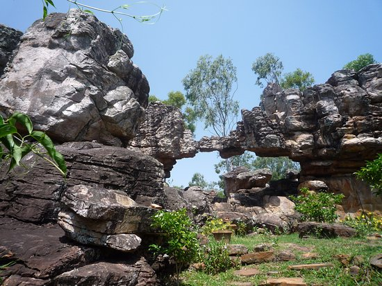

AKASA GANGA
5 Km From Sri Venkateswara Swami Temple, Tirupati India
0 km from Tirumala Temple


MUSEUM
North Mada Street Near Govindaraja Swamy Temple, Tirupati India 0.2 km from Tirumala Temple
explore

Silathoranam
Near Chakra Theertham 5 Km from Tirumala, Tirupati 517504 India 0.5 km from Tirumala Temple
explore